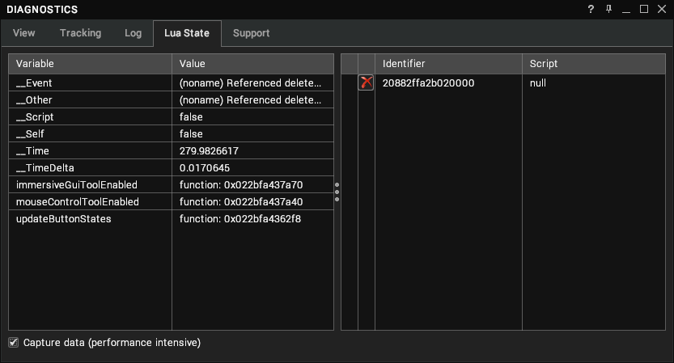

Lua Event Coroutines
Event handler scripts and the main Scripts console window now execute as coroutines.
Introduction
A coroutine is a piece of code that may pause its execution and resume at some point in the future. In Visionary Render they can be used to control the flow of an event script, in most cases so that it can perform time-based operations sequentially.
Consider this basic example using vrYield:
for i = 1, 10 do
print(i)
vrYield(0.5)
end
This prints the numbers 1 through 10 to the application log (and Lua output window) over 5 seconds, printing one number and sleeping for half a second.
To do this without yielding, you would have to use a Timestep event and a piece of metadata or a global variable to track the value of i.
Gotchas
There are some issues yielding inside for loops, most obviously when using iterators such as pairs, but also in nested loops.
The following code may randomly fail with a nil access error on the next iteration:
local t = {1, 2, 3}
for i, v in ipairs(t) do
print(i, v)
vrYield(0.5) -- don't do this here...
end
Equally, this code will fail after a while because it thinks
u is nil:
local t = 100
local u = 100
while t > 1 do
while u > 1 do
vrYield(0)
u = u - 1
end
t = t - 1
end
The most stable way is to structure the code so that the yielding logic is in a function call, and that function does not contain loops. For example, this should be fine:
local function doU(u)
--do stuff with u
vrYield(0)
end
local t = 100
local u = 100
while t > 1 do
while u > 1 do
doU(u)
u = u - 1
end
t = t - 1
end
Global Variables
When writing a script that makes use of vrYield, it is important to understand that global variables are shared between the main Lua state and any coroutines. This means that when your script yields, the values of any global variables are not guaranteed to be the same when the script resumes.
For example:
-- AssemblyA.EventCreate
print(__Self) -- prints AssemblyA
vrYield(0.1)
print(__Self) -- prints an undefined node (probably not AssemblyA)
If a script needs access to the global values it expects when the script it first executed, it should localise them somewhere in the script before the first call to
vrYield.
-- AssemblyA.EventCreate
local me = __Self
print(me) -- prints AssemblyA
vrYield(0.1)
print(me) -- prints AssemblyA
Recompiling coroutines
When editing scripts involving vrYield, compilation will automatically abort any previously running (and still sleeping) instances of the code. This is to avoid long running scripts becoming stuck, and waking up to perform out of date instructions which will most likely cause issues in the scripted simulations in the scene.
The exception to this is when executing code in the script console - no cleanup is done on the previously executing coroutine. This is intentional, because sometimes it is useful to write some test code that involves a long running script, and then also execute other code while that is running.
Managing sleeping coroutines
When a script calls vrYield, it goes to sleep for the specified (approximate) time. When this happens it is put into a list with all the other sleeping scripts, which is accessible from Lua itself using vrListSleepingScripts. This returns an array of sleeping coroutine names.
The name of a script can be set using vrSetScriptIdentifier, otherwise the name will just be a string representation of the coroutine memory address. This is not used for anything other than identification purposes and as the parameter to vrAbortScript, which can be used to abort a sleeping coroutine.
This can also be done using the Lua State tab in the Diagnostics window. The left panel displays the state of global variables, the right panel displays any sleeping scripts and provides an option to abort them.
